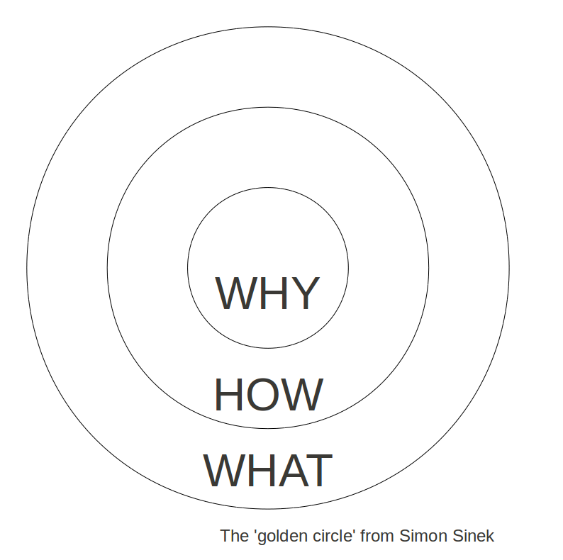

什么是WHY-HOW-WHAT
黄金圈法(WHY-HOW-WHAT)则是西蒙·斯涅克在TED演讲时提出来阐释激励人心的领袖力的模型，下面有视频链接。 写这篇文章也是在提醒自己，在做事情前想清楚为什么做，如何做，做的是什么。

黄金环的提出与解释
世界上大部分人都知道自己在做什么，其中一部分人知道自己怎么去做，这可以称作为自己的差异价值，但很少的人知道自己为什么要做这件事情，这是西蒙·斯涅克做出的术语解释。
因此，成功的伟大领袖就是极少数的人，他们是从里到外的生活方式，从为什么到怎么做再到是什么，与大多数人完全相反。
以大脑与黄金圈法则相比较，就很容易发现从里到外与从外到里的完全不一样的感觉，当人们能感觉到你的理念时，就会对你的产品抱有希望。
黄金环的内容
黄金圆环的中心是”为什么why”, 第二个环是”怎么做how”，最外面的环是”是什么what”。为什么？怎么做？是什么？这个黄金圆环解释了为什么有的组织和领导者能够激发行动，而其他的不能。
作为结果，我们思考的方式，我们行动的方式，和我们沟通的方式，在这个黄金圆环上都是从外到内的。我们从最清楚的再到最模糊的。但是激励型的领导者和组织，不管他们大小规模，不管他们所在行业，都从内到外地思考，行动，和沟通。
在这个黄金圆环上当我们从外向内沟通时，我们可以让人们理解大量复杂的信息，比如特点，好处，事实，还有图表，但就是无法激发他们的行动。
当我们可以从内向外沟通时，我们就是在直接与大脑中控制行动的部分沟通，然后人们再理性地考虑我们所说和做的“怎样”和“什么”。这就是那些勇敢大胆决定的来源。人们不因你所做的而买单，他们因你所做的理由而买单，你的行动就证明了你的信念。
黄金环的启示
- 以终为始。思考问题从“为什么”开始，通过“挑战现状、挑战自我、战胜自
我”，从而实现创新与发展。 - 由内而外。从“为什么”找到新目标；再研究“怎么做”；然后通过“是什么”明确结果，落地实施。
- 循环提高。从“为什么”、“怎么做”到“是什么”，不断设定新目标、完善新思路、发展新成果，闭环优化、循环提高。
摘自
https://wiki.mbalib.com/wiki/%E9%BB%84%E9%87%91%E5%9C%86%E7%8E%AF
https://zh.wikipedia.org/wiki/%E8%A5%BF%E8%92%99%C2%B7%E6%96%AF%E6%B6%85%E5%85%8B
https://www.ted.com/talks/simon_sinek_how_great_leaders_inspire_action/transcript?language=zh-cn
https://zhuanlan.zhihu.com/p/60774962